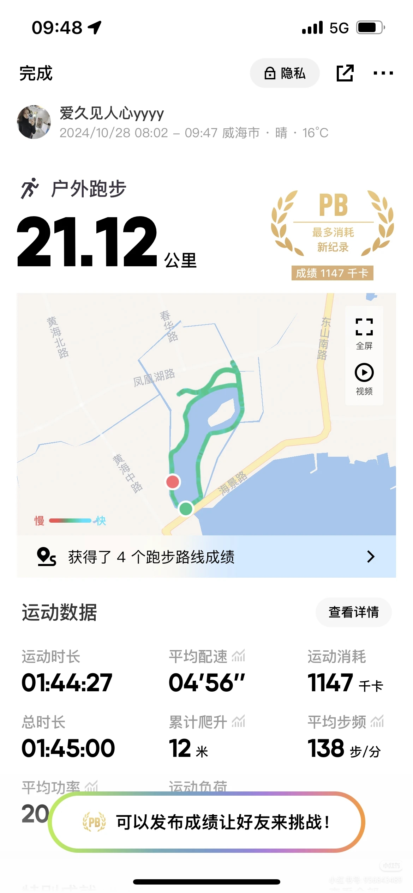

### 半程马拉松的感悟：跑步软件Keep让我重新认识了跑步的力量

作为一名跑团的新成员，我刚刚完成了我的半程马拉松（21.12公里）。这次跑步不仅是一次身体上的挑战，更是一次心灵上的成长。通过跑步软件Keep的帮助，我重新认识了跑步的力量，并且在团长的指导下，感受到了团队的支持与鼓励。
#### 初识跑步：从零开始的勇气
作为一个跑步新手，我对长距离跑步并没有太多信心。然而，自从接触了跑步软件Keep后，一切都发生了改变。Keep不仅仅是一个记录跑步数据的应用，它更像是一个贴心的教练，为我量身定制了适合我的训练计划。从最初的短距离慢跑，到逐渐增加距离和速度，Keep始终陪伴在我身边，给予我科学的指导和激励。
在这次半程马拉松中，Keep为我定制了一条风景优美的路线，沿途有湖泊、道路和绿树，让我在跑步的过程中享受到了大自然的美好。同时，Keep还根据我的体能状况，合理安排了我的跑步时间，确保我在最佳状态下完成比赛。这些细致入微的服务，让我对跑步有了全新的认识，也让我更加坚定了继续坚持下去的决心。
#### 跑步的力量：超越自我
当我站在起跑线上的那一刻，心中既有期待，也有紧张。但随着脚步的迈出，所有的不安都渐渐消散。Keep的数据记录功能让我能够实时了解自己的状态，包括配速、心率和消耗的卡路里等。这些数据不仅帮助我调整节奏，还让我对自己的表现有了清晰的认知。
在跑步的过程中，我遇到了一些困难，比如体力不支、腿部酸痛等。但正是这些挑战，让我学会了如何克服困难，如何在逆境中寻找突破。每当我觉得快要放弃的时候，Keep的语音提示和社区里的鼓励话语总能给我带来力量。最终，我成功完成了21.12公里的半程马拉松，并刷新了自己的个人最好成绩（PB），消耗了1147千卡的能量。
#### 团队的支持：成长的源泉
作为跑团的一员，我深深感受到了团队的力量。团长和其他团员们不仅在日常训练中给予我指导，还在比赛中为我加油打气。他们的支持和鼓励让我明白，跑步不仅仅是一项个人运动，更是一种集体的体验。在这个过程中，我学会了如何与他人合作，如何在团队中找到自己的位置。
特别值得一提的是，团长在赛前为我们组织了一次模拟训练，帮助我们熟悉赛道和调整状态。这种细致入微的关怀让我倍感温暖，也让我更加有信心面对即将到来的比赛。赛后，团长还特意为我们准备了一场庆祝活动，大家围坐在一起分享各自的跑步心得，气氛温馨而热烈。这些经历让我深刻体会到，跑步不仅仅是为了追求个人的突破，更是为了与志同道合的人一起成长。
#### 感谢Keep：科技赋能跑步
最后，我要特别感谢跑步软件Keep。它不仅为我提供了科学的训练计划，还让我能够直观地看到自己的进步。通过Keep的数据分析，我能够清楚地了解到自己在哪些方面需要改进，从而有针对性地进行训练。此外，Keep的社区功能让我结识了许多志同道合的朋友，大家互相鼓励、共同进步，这种氛围让我感到无比温暖。
总之，这次半程马拉松的经历让我收获颇丰。我不仅突破了自己的极限，还学会了如何在困难面前保持冷静和坚持。更重要的是，我明白了跑步的意义不仅仅在于锻炼身体，更在于培养意志力和团队精神。未来，我会继续跟随Keep的脚步，不断挑战自我，与跑团的伙伴们一起奔跑在人生的道路上。
感谢Keep，感谢跑团，感谢每一位支持我的人。跑步的路上，有你们相伴，真好！ 起跑前未充分热身，前2公里体感偏紧，之后逐渐打开。